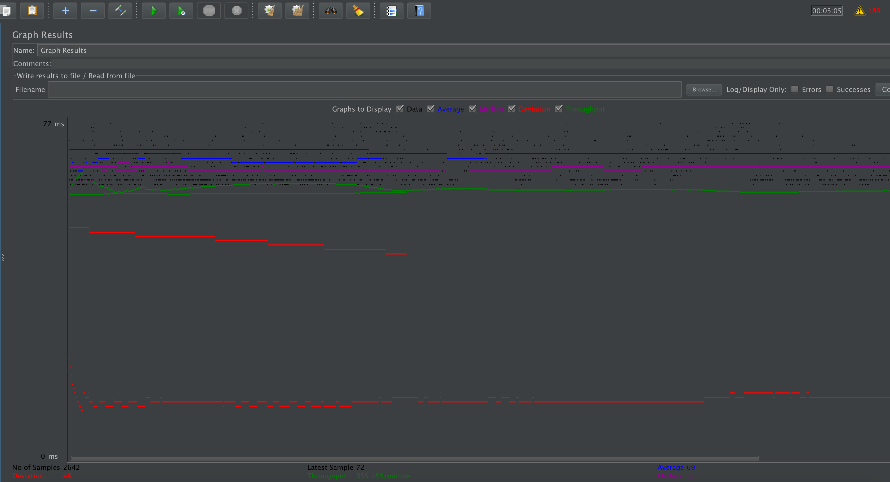
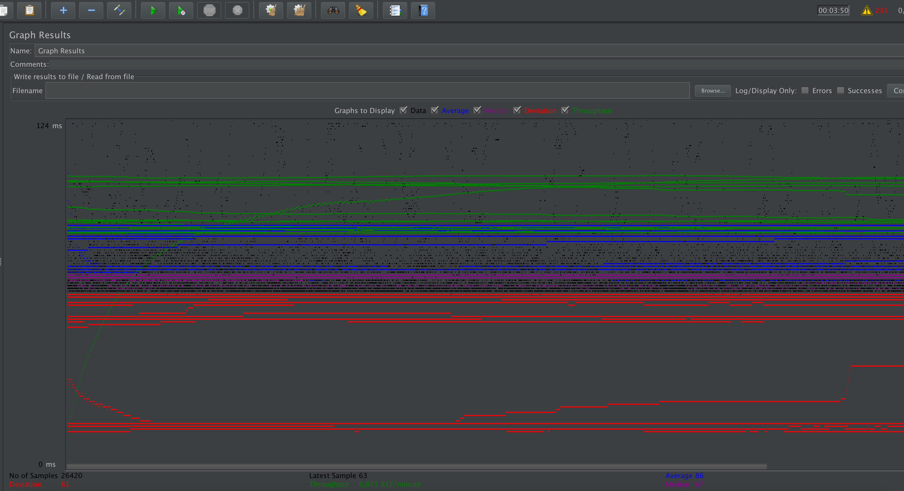
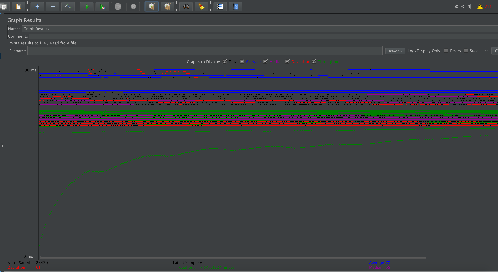
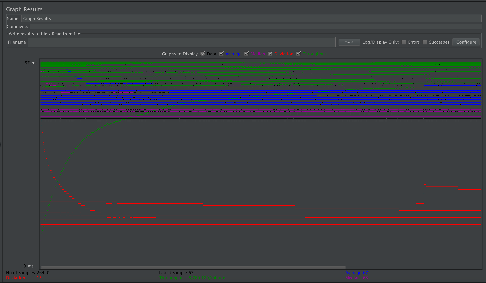
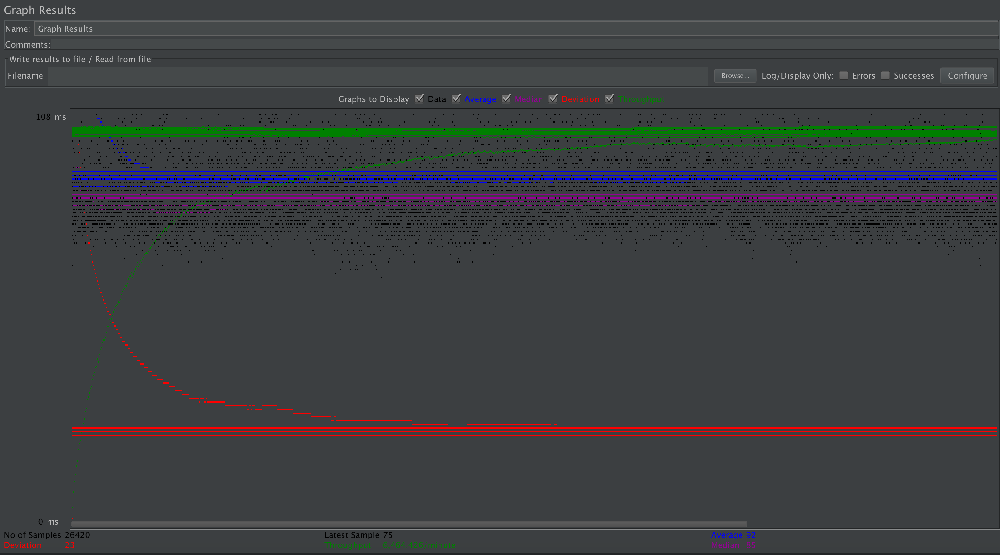
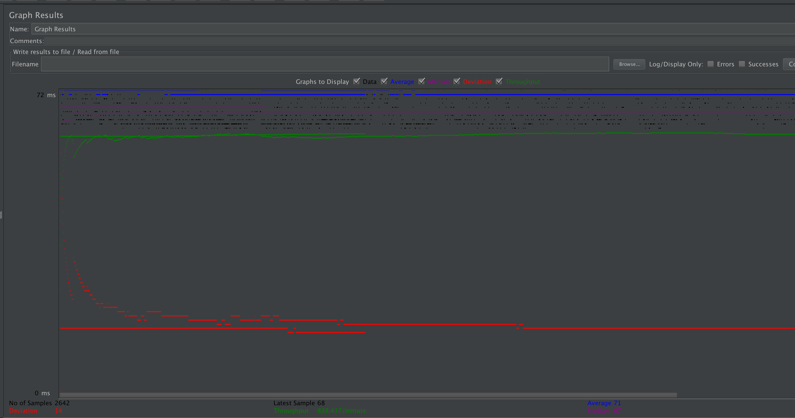
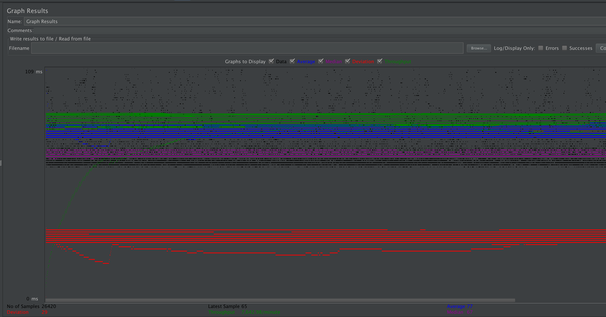
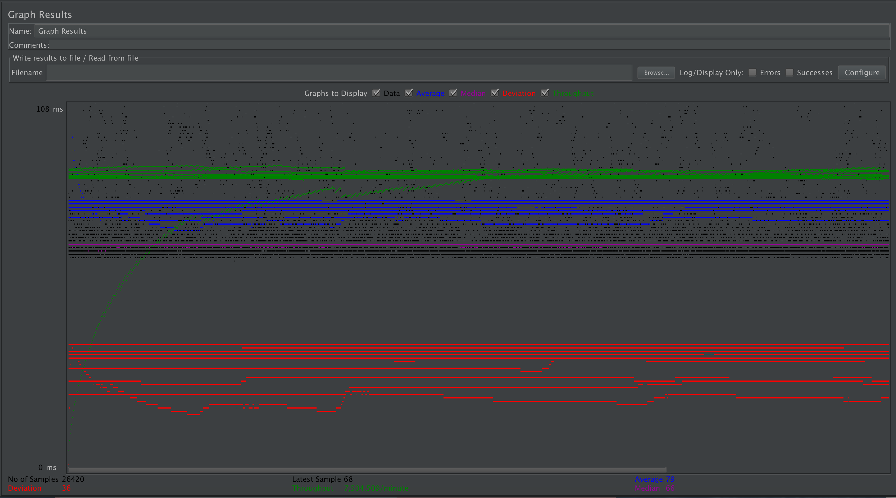
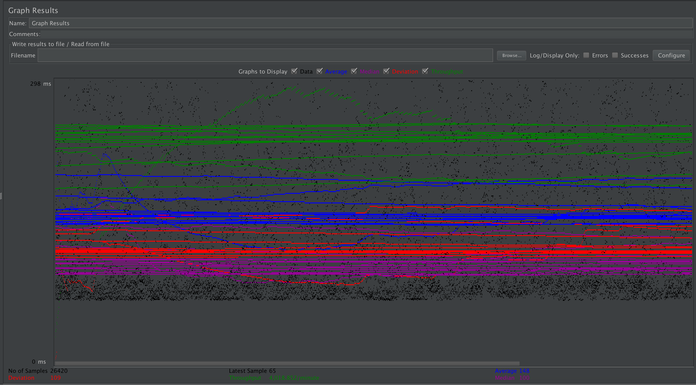

| Single-instance version cases | Graph Results Screenshot | Average Query Time(ms) | Average Search Servlet Time(ms) | Average JDBC Time(ms) | Analysis |
| Case 1: HTTP/1 thread |  | 69 | 1.314365 | 1.068226 | Because I don't have login, therefore maybe my time is a little bit faster than those have login?? Also when I view my result tree in Jmeter, a lot of them are empty, no response, I'm also not sure any effect on my average time??? (??? I'm not sure) |
| Case 2: HTTP/10 threads |  | 86 | 1.647454 | 1.365780 | It needs more time when have 10 threads, TJ and TS increase about 0.3ms, and average query time increase from 69 to 86 compared with only one thread. |
| Case 3: HTTPS/10 threads |  | 78 | 1.247028 | 1.023007 | Using HTTPS makes everything faster than using HTTP. Increase average search servelet time 0.4ms, and increase average JDBC time about 0.3ms. |
| Case 4: HTTP/10 threads/No prepared statements |  | 67 | 1.272869 | 1.062545 | Disable PreparedStatement make time longer, but very very little |
| Case 5: HTTP/10 threads/No connection pooling |  | 92 | 2.825956 | 1.226659 | Disable connection pooling makes search servlet time taking longer time, from ~1.2ms to ~2.8ms. Average JDBC time doesn't change a lot |
| Scaled version cases | Graph Results Screenshot | Average Query Time(ms) | Average Search Servlet Time(ms) | Average JDBC Time(ms) | Analysis |
| Case 1: HTTP/1 thread |  | 71 | 1.623955 | 1.185489 | Compared with above single-instance case, time doesn't change a lot, because of sticky session, one user always go to same instance |
| Case 2: HTTP/10 threads |  | 77 | 1.354923 | 1.129811 | Compared with single-instance case, time only decrease a little, because master and slave both do the job |
| Case 3: HTTP/10 threads/No prepared statements |  | 79 | 1.287922 | 1.060501 | Compared with single-instance case, time doesn't change. Average query time increase from 67 to 79. |
| Case 4: HTTP/10 threads/No connection pooling |  | 148 | 2.694319 | 1.170347 | Compared with single-instance case, time becomes faster, but only very little. Average query time change from 92 to 148. |